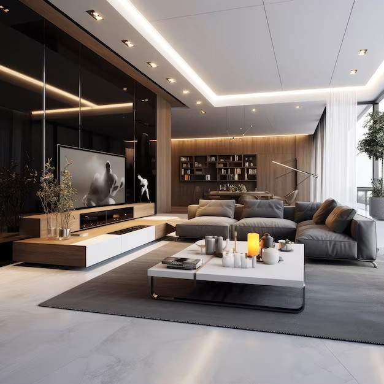
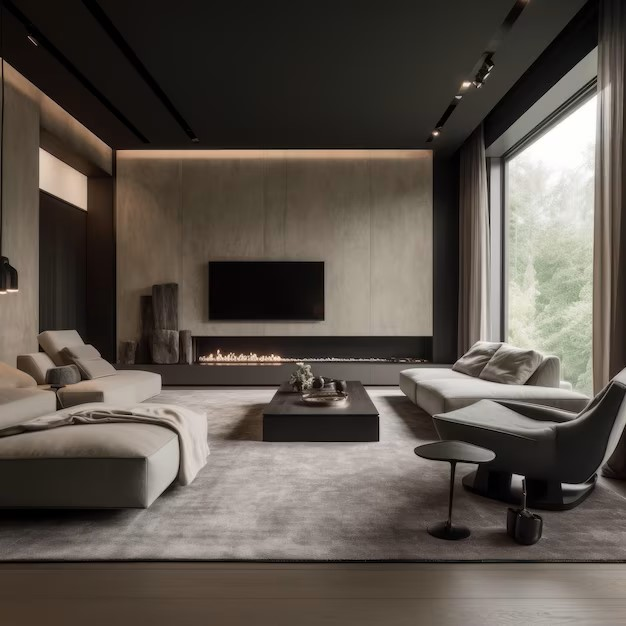
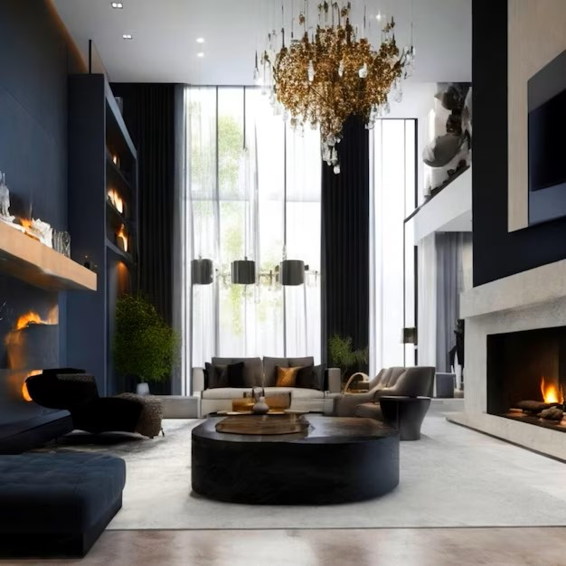

DXB AL-QUOZ
At KCS Interior Design, we believe that great design has the power to transform spaces and enhance lives. That's why we offer a range of services tailored to meet your unique needs and vision.
Window treatments are an essential element of any interior design project. Our team will help you choose the perfect drapes, shades, or blinds to complement your space and provide the functionality you need.
From start to finish, we'll handle every aspect of your interior design project. Our project management services ensure that everything runs smoothly, on time, and on budget, help you select pieces that not only look great but also function well in your space.
